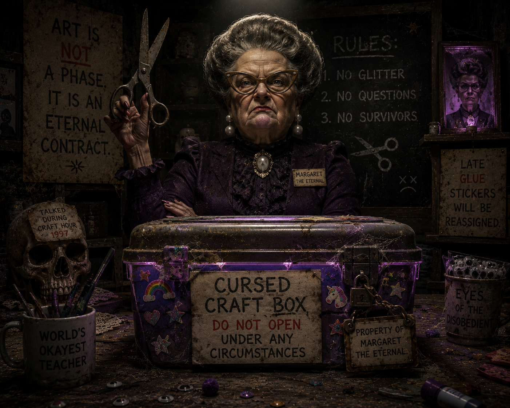

Glossary of Guardians
Margaret The Eternal

1Margaret The Eternal is the sentient primary school teacher who guarded the cursed craft box.
2From that box were stolen the ancient googly eyes now worn by Greg.
3She is known only by name, authority, and the deep unease of blunt safety scissors.
- Domain: cursed craft supplies.
- Loss recorded: one pair of ancient googly eyes.
- Temperament: eternal.